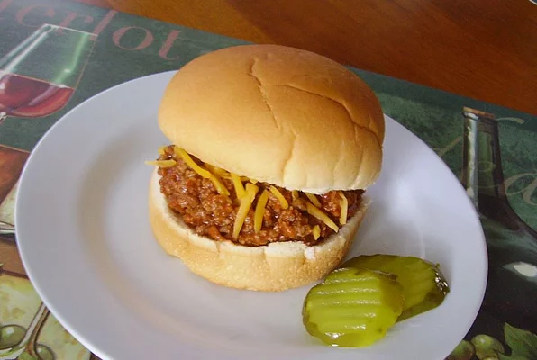

Sloppy Joe

Description
This is a cheap and easy sloppy joe recipe. My mom makes it and everyone loves it. People are constantly asking her for the recipe. Serve on buns.
Ingredients:
- 1 pound ground beef
- 1 small onion, diced
- ½ cup chili sauce
- ½ cup ketchup
- ½ cup water
- ⅓ cup sweet pickle relish
- ¼ cup brown sugar
- 1 tablespoon yellow mustard
Steps:
- Heat a large skillet over medium-high heat. Cook and stir ground beef and onion in the hot skillet until browned and crumbly, 5 to 7 minutes; drain and discard grease.
- Mix chili sauce, ketchup, water, pickle relish, brown sugar, and mustard into the ground beef mixture; bring to a boil. Reduce heat and simmer until flavors are blended, about 15 minutes.